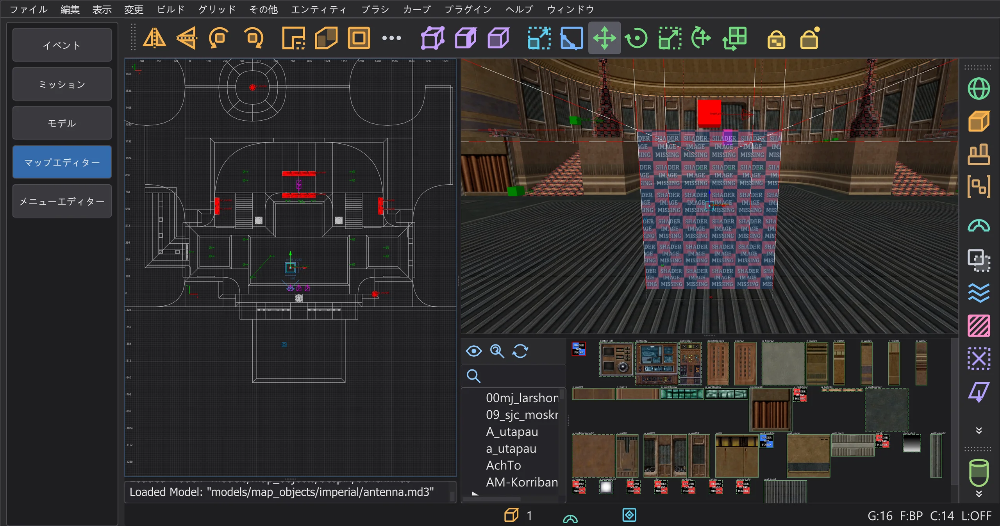
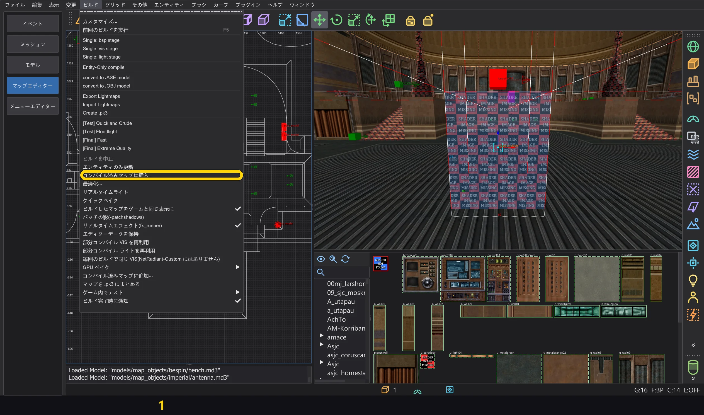
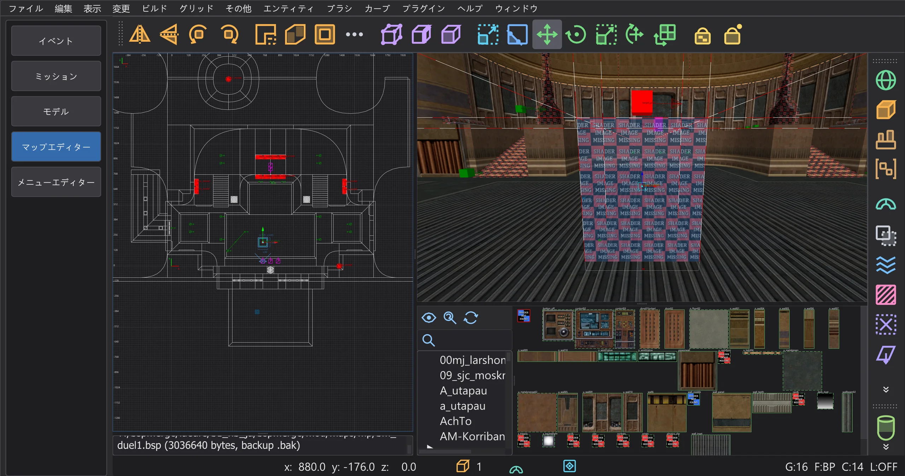
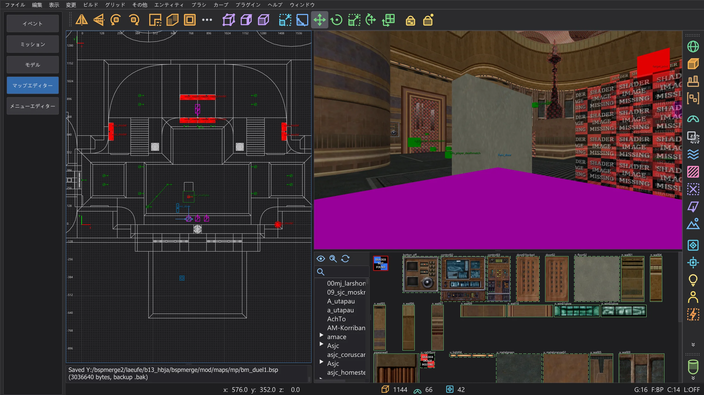
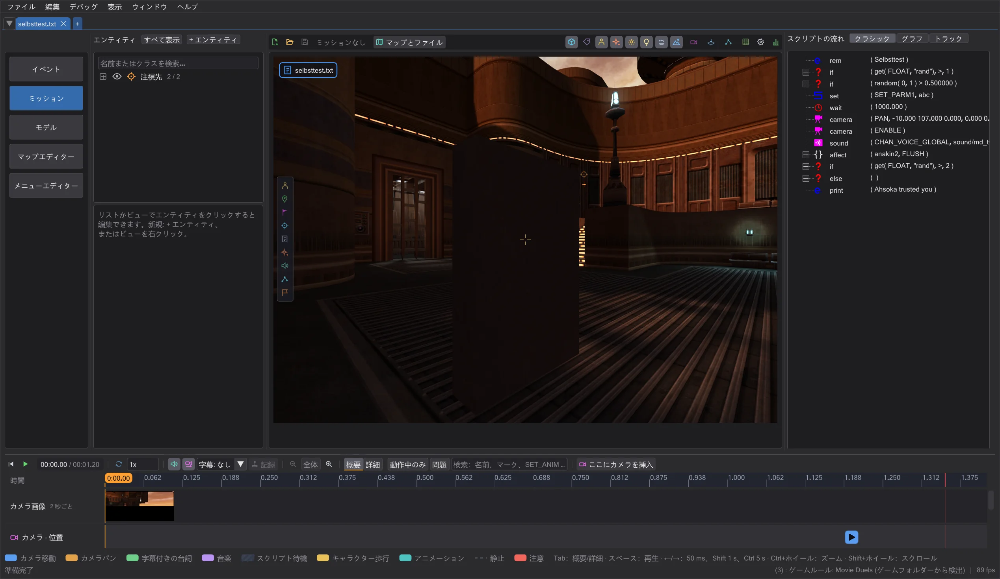

マップエディター:コンパイル済みマップにブラシエンティティを挿入する
ソースのないコンパイル済みマップに、トリガー、func_usable、クリップブラシ、func_door などの見える可動物を追加します。ビルド > コンパイル済みマップに挿入 は新しい部分だけをビルドして .bsp に追加します。エンティティは新しいモデル *N として、見えるものはマップに合ったライトマップ付きで、クリップはワールドへ。ワールドの BSP ツリー、VIS、ライトマップはバイト単位でそのままです。
使い方#
- 1
ファイル > .bsp を開く でコンパイル済みマップを開きます(マップエディター:完成したマップを開いて変更する を参照)。
- 2
新しいブラシエンティティをいつもどおり作ります。
textures/system/triggerのブラシをtrigger_multipleやtrigger_onceに、nodrawブラシでfunc_usableを、originブラシ付きのブラシエンティティを。新しいポイントエンティティ(新しいトリガーが指すtarget_printやtarget_relayなど)も一緒に入ります。
mp/duel1 のプレイヤースタートの前に置いた新しい trigger_multipleと、そのtarget_print。 - 3
ビルド > コンパイル済みマップに挿入:新しいエンティティだけが空のマップ(ブラシのない worldspawn、作業フォルダーの
<名前>_teil.map)に入り、q3map2-bspがビルドします。リークは関係なく、ライトも不要です。q3map2 はエンティティのモデルをフラッドフィルなしでビルドします。
ビルド メニューとその項目 (1)。 - 4
それらのモデルは新しい
*Nとして .bsp に追加されます。モデル、ブラシ、ブラシ面、平面、シェーダー(同じフラグの既存シェーダーは再利用)、そして q3map2 と同じくモデルごとに専用のリーフ。エンティティはエンティティランプで"model" "*N"を得ます。ワールドの BSP ツリー、VIS、ライトマップ、サーフェス、ライトグリッドはバイト単位でそのままで、ほかのランプは末尾に追加されるだけです。 - 5
保存は シェーダーとサーフェス ウィンドウと同じです。ルーズな .bsp は先に
.bakを作ってから書き込み、.pk3 からの場合は方法を選びます。その後、新しいエンティティはマップの一部になり、もう一度挿入すると、それ以降に新しく追加したものだけが入ります。
挿入後:コンソールに保存した .bsp とそのバックアップ .bak が表示されます。


チェック#
- 挿入されないもの:クリップではない新しいワールドブラシ(実体、水、フォグ、見えるものは BSP ツリーと VIS を変えてしまいます)、変更または削除したワールドブラシや既存のブラシエンティティ(フルビルドが必要)、異なる BSP 形式、外部ライトマップ(
lm_####.tga)を使うコンパイル済みマップ。 - レンダラーの上限:ライトマップは最大 256 ページ(
MAX_LIGHTMAPS)、サーフェス・頂点・インデックスはqfiles.hの上限まで。超えるとコマンドは拒否し、数値を報告します。 - モデル数はゲームの読み込みどおりに数えます。シングルプレイでは最大 511(次の番号はゲーム自身のボックスモデル
BOX_MODEL_HANDLE)、マルチプレイでは 510(CAPSULE_MODEL_HANDLE)。513 以上ではゲームがマップを拒否します(MAX_SUBMODELS)。 - 警告:実体のあるワールドブラシと重なる実体のある新しいブラシ、マップに対応する
targetnameがないtarget、qfiles.hの形式上の上限。 - 変更した既存のポイントエンティティは、コンパイル済みマップのままです。ビルド > エンティティのみ更新 で書き込んでください。
- ウィンドウ シェーダーとサーフェス に未保存の変更があると、先に確認します。保存 は変更を保存し、エンティティは保存後のマップに挿入されます。破棄 は変更を破棄し、キャンセル は何も挿入しません。別のマップを開く前にも同じ確認が出ます。
- 保存に失敗したとき(たとえばゲームがファイルを開いている)や保存方法の選択を取り消したときは、何も変わりません。ファイル、作業コピー、新しいエンティティは元のままで、もう一度挿入できます。
クリップと見える可動物#
- 1
クリップ:worldspawn 内の
textures/system/clip(またはplayerclip、monsterclip、botclip、shotclipを持つほかのシェーダー)の新しいブラシはワールドに入ります。q3map2 のフルビルドと同じく、ブラシが入り込む BSP ツリーのすべてのリーフに登録されます。ゲームはこうしてワールドブラシを見つけます。増えるのはリーフのブラシリストとブラシだけで、BSP ツリー、VIS、サーフェス、ライトマップ、ライトグリッドはバイト単位でそのままです。
mp/duel1 のプレイヤースタートの前:トリガーの後ろのクリップブラシと新しい func_door。 - 2
見える可動物(見えるブラシの
func_door、func_train、func_rotating、func_static、func_plat)にはライトが必要です。最初のビルドの後、コマンドは部分をもう一度ビルドします。今度は変換したワールドを影の投影元に、その焼き込みモデルとマップのライト(<名前>_teillicht.map)を加えてライティングします。q3map2-bspと-lightは、マップに保存されたスイッチ(_q3map2_cmdline)を使い、なければ q3map2 の既定値です。 - 3
取り込むのは新しいモデルだけです。そのサーフェス、頂点、インデックス、シェーダー、そして使うライトマップページだけを、マップのライトマップの後ろに追加します。ブラシ面は新しいサーフェスを指し、フォグはマップのフォグに対応づけます。ワールドのライトマップはバイト単位でそのままです。

ミッションタブのプレビューで見た保存済みマップ:スタート地点のプレイヤーの目から見た、ライトマップ付きの新しいドア。